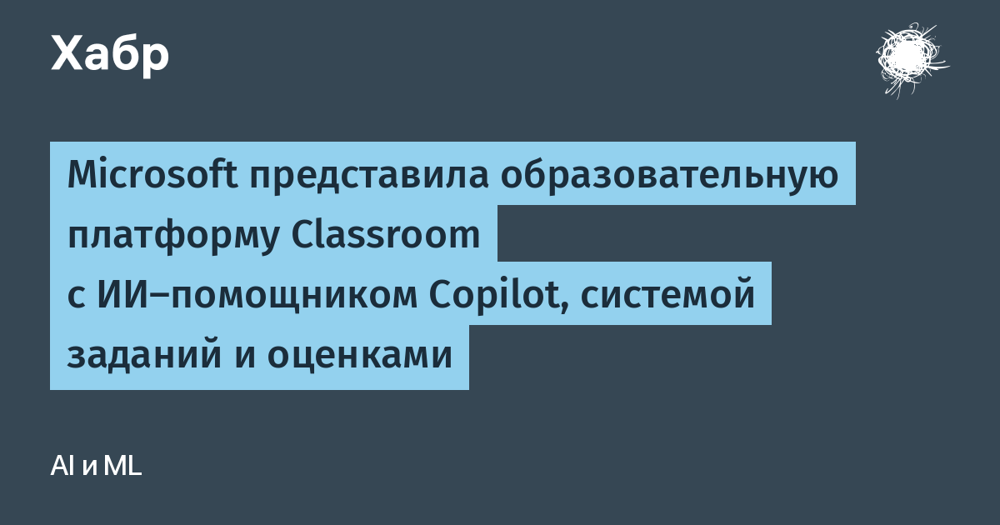

Classroom задумана как единая площадка для учеников и преподавателей: классная работа (Classwork), выдача заданий (Assignments), оценки (Grades), записные книжки OneNote для уроков и аналитические отчёты. У школьников появится личная домашняя панель с активными и недавно проверенными работами, просрочками и отзывами учителя, а у преподавателей — панель с заданиями, ожидающими проверки, и предстоящими сдачами.
Главное отличие от привычной связки Teams plus OneNote — ИИ здесь не надстройка, а часть маршрута обучения. Преподавателям доступен инструмент Teach in Copilot для планирования учебного процесса, в разделе заданий работает агент Study and Learn, а ученикам предлагают «учебные активности» (Learning Activities) на базе ИИ — интерактивные упражнения, которые платформа генерирует под тему урока.
Предварительную версию обещают в начале 2027 года. По заявлению Microsoft, сервис будет включён в подписки Microsoft 365 уровней A2, A3, A5 и A7 без дополнительной платы, а администраторы уже могут подать заявку на участие в тестировании через официальную страницу регистрации.
Похожая по замыслу платформа в России уже есть — «Сферум» от VK, который совместно с Минпросвещения внедряется в школы. Microsoft же делает ставку на плотную интеграцию ИИ-агентов прямо в задания и оценивание — посмотрим, приживётся ли такой формат в массовой школе.